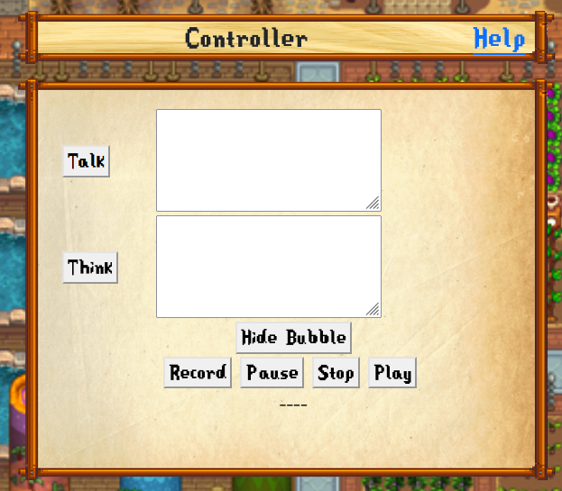
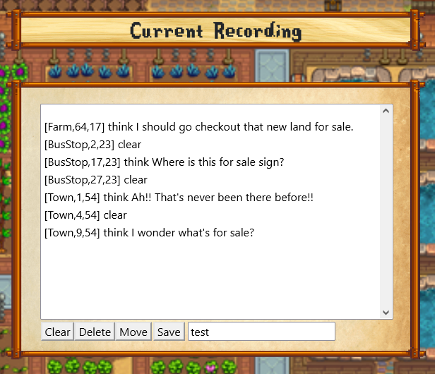
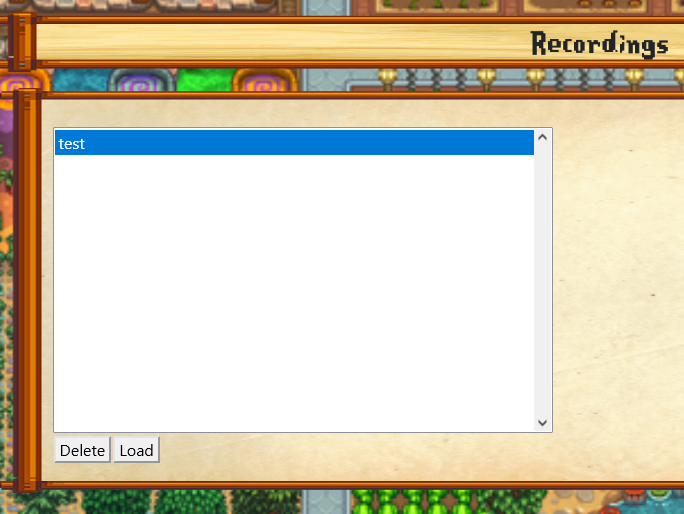

Think-n-Talk gives you the ability to think and speak, in game, as your Farmer. You can either have text in a Think style bubble or a talking style bubble:
If you are playing a multiplayer game and the other players has Stardew Web or Think-n-Talk installed, they will see you speech bubbles.
The version in Stardew Web also allows the recording and playback of sequences of speech bubbles. Why would I want to record these?? I use
recording sequences to make teaser vidoes for new mods.
Example:
The Farmer Speak view contains 3 panels to control the speech bubbles and control the recording and playback.
The 'Controller' panel has all of the controls for displaying, playing and recording speech bubbles.
- Talk - The text in the box to the right will be displayed above your Farmer in a 'Talk' bubble.
- Think - The text in the box to the right will be displayed above your Farmer in a 'Think' bubble.
- Hide Bubble - Hides any bubble currently on the screen.
- Record - Any talk actions (Talk, think or clear) are saved in the 'Current Recording' list as 'Marks'.
- Pause - During playback pressing 'Pausse' will stop the triggering of speech bubbles as you hit the marks.
- Stop - Stop either the recording or the playback. For playbacks it also sets the playback back to zero.
- Plau - As you walk through the game, if you walk over any of the recorded 'Marks' the recorded action will be run.
|  |
The 'Current Recording' panel lists each of the currently recorded 'Marks'.
- Clear - Erases the cotents of the current recording.
- Delete - Deletes the currently seleted Mark.
- Move - Moves the currently selected Mark to the current location of the Farmer.
- Save - Saves the contents of the current recording to the save entered in the textbox to the right.
|  |
The 'Recordings' panel lists the previously saved Mark collections.
- Delete - Deletes the currently selected recoding.
- Load - Loads the contents on the currently selected recording into the 'Current Recording'
|  |
Customization
You can modify the think and talk bubbles image files to use your own design. In a multiplayer game the other players will see your
custom bubbles.
In your mods directory for StardewWeb (Mods\StardewWeb) is the directory 'sprites' there 2 files:
- think_bubble.png - the thinking speech bubble
- talk_bubble.png - the talking speech bubble
You can add your own version of these image by adding a custom file to this directory.
Custom file names:
- custom_think_bubble.png - your thinking speech bubble.
- custom_talk_bubble.png - you talking speech bubble.
|
Return to the Index